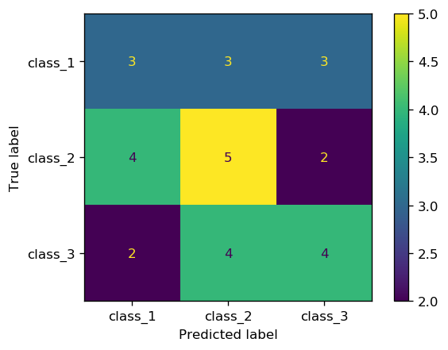

Confusion Matrix
Confusion matrix is one of the best ways to evaluate the accuracy of a classifier. It summarizes the results of testing a classifier by dividing the observations into correct and incorrect predictions, for each class (class I, class II, class III etc.).
# Create dummy data
import numpy as np
from sklearn.metrics import confusion_matrix, ConfusionMatrixDisplay
# Random distributions of size 20 with three class labels 1, 2, and 3
y_obs = np.random.randint(low=1, high=4, size=30)
y_pred = np.random.randint(low=1, high=4, size=30)
print(f'true classes: {y_obs}')
print(f'pred classes: {y_pred}')
true classes: [1 3 1 2 3 3 2 1 2 3 3 1 1 3 3 2 1 1 2 3 1 3 1 2 2 2 2 2 3 2] pred classes: [3 3 2 2 3 2 1 1 3 2 2 1 2 1 2 2 1 3 3 3 3 3 2 2 1 2 1 2 1 1]
cm = confusion_matrix(y_obs, y_pred)
cm
array([[3, 3, 3],
[4, 5, 2],
[2, 4, 4]])
import matplotlib.pyplot as plt
fig, ax = plt.subplots(1, 1, dpi=150)
cm_plot = ConfusionMatrixDisplay(confusion_matrix=cm,
display_labels=["class_1", "class_2", "class_3"])
cm_plot.plot(ax=ax);

Note: sklearn uses the following convention to show the confusion matrix
| Predicted class | ||||
|---|---|---|---|---|
| Negative | Positive | |||
|
Observed
class |
Negative | True Negative (TN) | False Positive (FP) | |
| Positive | False Negative (FN) | True Positive (TP) | ||
where TN, FP, FN, and TP stand for True Negative, False Positive, False Negative, and True Positive, respectively. This is important as most references use a different convention (see Classification Metrics tutorial for more on this). sklearn assigns the predictions to columns, and observations to rows. If the label argument is not specified, the labels are sorted numerically or alphabetically from left to right (for prediction labels) and top to bottom (for true labels).
To summarize, according to sklearn convention:
- The first column contains, negative predicted labels (TN and FN)
- The second column contains, positive predicted labels (TP and FP)
- The first row contains negative observed labels (TN and FP)
- The second row contains positive observed labels (TP and FN)
- The diagonal contains the number of correctly predicted labels (TN and TP)